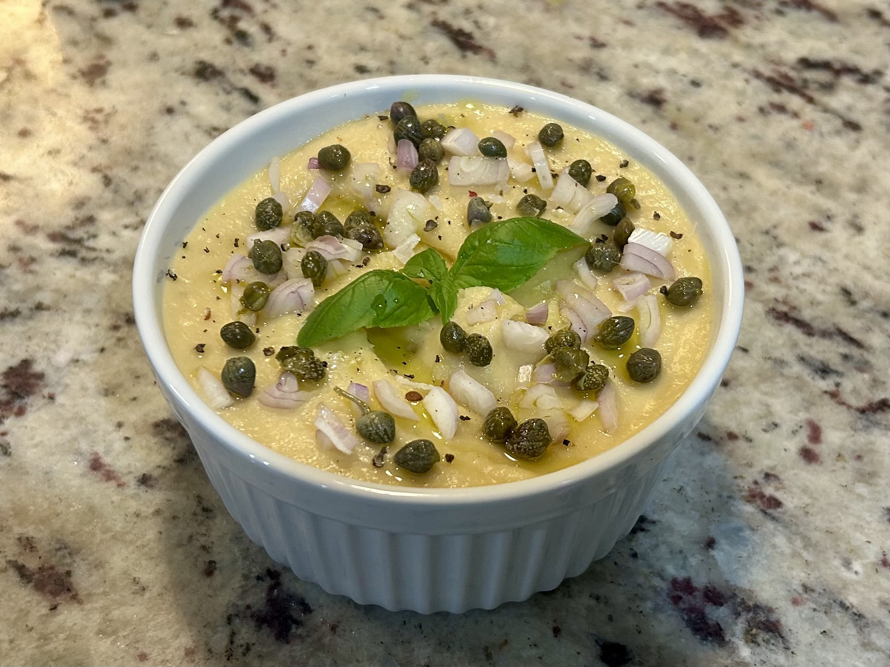

Side
Φάβα
Greek hummus ;) A silky yellow split-pea dip, simple and bright, with lemon, olive oil, and the classic sharp finish of onion and capers.

Ingredients
- 2/3 cup yellow split peas
- 1 1/2 cups water
- 1/2 small onion, about 50–60 g, or 1 shallot, roughly chopped
- 1 bay leaf
- 1 1/2 tsp extra-virgin olive oil
- 2 tbsp lemon juice
- 1/2 tsp salt
- Black pepper, to taste
To finish
- Finely sliced red onion
- Capers
- Parsley or basil
- A few drops of extra-virgin olive oil, if desired
Method
- Rinse the yellow split peas well. Put the peas, water, onion, and bay leaf in the Instant Pot.
- Cook on High Pressure for 10 minutes, then allow 10 minutes of natural release before venting.
- Remove the bay leaf. If there is excess liquid, use Sauté for 2–5 minutes, until the mixture is thick but still moist.
- Add the olive oil, lemon juice, salt, and black pepper, and blend while still hot until completely smooth. Add a little hot water only if needed.
- Keep the dip slightly looser than hummus while warm, since it firms up quite a bit as it cools.
Serving
Spoon into a bowl and top with finely sliced red onion, capers, parsley or basil, and a few drops of olive oil if you like.
Notes
Despite the nickname, this is not chickpea hummus at all, but the classic Greek split-pea purée, φάβα. Swapping the yellow split peas for chana dal, however, leads to an interesting chickpea-based dip of its own. The texture is best when blended fully smooth and left just a touch loose while warm.